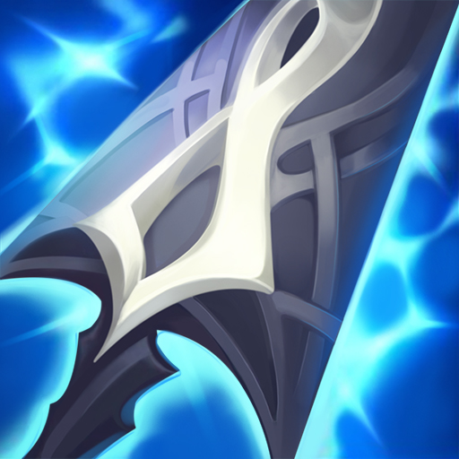

25% Critical Strike
+35% Attack Speed
Elétrico: + 5% de velocidade de movimento
Energizado: mover e atacar gera pilhas de energia. No máximo, seu próximo ataque causa 50-120 bônus
de dano mágico e ativa todos os efeitos Energizados.
Iluminação Shiv: Ataques energizados ricocheteiam em até 5 inimigos próximos, e cada acerto pode
causar críticas.
Espada de Youmuu
+50 Attack Damage
+10 Ability Haste
Fatia: +10 Penetração de Armadura.
Momentum: O movimento aumenta o Momentum, garantindo um máximo de 50 Velocidade de Movimento a 100
pilhas. Os ataques gastam todo o ímpeto. O momentum decai enquanto o movimento é prejudicado.
Aceleração espectral: Ataques que gastam impulso máximo concedem 25% de velocidade de ataque por 4
segundos.
Canhão Fumegante
+25% Critical Rate
+35% Attack Speed
Rapidez do Caçador: + 5% de Velocidade de Movimento.
Energizado: mover e atacar gera pilhas de energia. No máximo, seu próximo ataque causa 50-120 bônus
de dano mágico e ativa todos os efeitos Energizados.
Barril do Canhão Fumegante: As pilhas de energia carregam 25% mais rápido e os ataques energizados
têm 150 de alcance de ataque bônus. Ataques corpo a corpo ganham apenas 50 de alcance.
Lembrete Mortal
+45 Attack Damage
Último Sussurro: + 30% de Penetração de Armadura.
Chamada do Carrasco: Dano físico aplica feridas graves aos campeões inimigos por 3 segundos.
Grievous Wounds é um debuff que reduz toda a cura recebida em 40%
Draktharr
+55 Attack Damage
+10 Ability Haste
Navalha: +15 Penetração de Armadura.
Nightstalker: Ficar invisível por 1 segundo faz com que seu próximo ataque contra um campeão cause
20-125 de
dano físico adicional e os retarda em 99% por 0,25 segundos. Buff duram 5 segundos e ataques à
distância não diminuem.
+25% Critical Rate
+45% Attack Speed
Fúria do Vento: Os ataques atingem 2 inimigos próximos adicionais, cada um causando 40%. Esses
ataques podem causar um Ataque Crítico e desencadear efeitos ao acertar.
Só pode ser comprado em campeões de longo alcance.
Espada Do Rei Destruido
+20 Attack Damage
+35% Attack Speed
Sede: + 10% Vamp Físico.
Ataques arruinados: Ataques causam dano físico adicional igual a (9% corpo a corpo) (6% à distância)
da saúde atual do inimigo. Causa pelo menos 15 de dano e contra monstros causa no máximo 60 de dano.
Drenar: acertar um campeão com 3 ataques ou habilidades causa 30-100 de dano mágico e rouba 25% de
sua velocidade de movimento por 2 segundos. (Resfriamento dos anos 60)
Glave sombria
+50 Attack Damage
+10 Ability Haste
Sabotagem: +10 Penetração de Armadura.
Blackout: Quando avistado por wards ou armadilhas inimigas, ganha Blackout por 8 segundos,
desabilitando wards ao redor, bem como expondo wards e armadilhas furtivas (resfriamento de 60
segundos).
Seus ataques básicos matam instantaneamente armadilhas e proteções reveladas.
Muramana

+25 Attack Damage
+1000 Max Mana
+20 Ability Haste
Temor: concede dano de ataque bônus igual a 1% de mana máximo. Reembolsa 15% da mana gasta.
Choque: Ataques básicos contra campeões inimigos consomem 3% do mana atual para causar 6% de dano
físico de bônus de mana atual. Este efeito só é ativado quando você tem mais de 20% de mana máximo.
Limitado a 1 item AWE.
Manamune
+25 Attack Damage
+300 Max Mana
+20 Ability Haste
Temor: concede dano de ataque bônus igual a 1% de mana máximo. Reembolsa 15% da mana gasta.
Carga de Mana: Concede uma carga a cada 4 segundos, até 3 cargas. Cada ataque básico ao acertar ou
gasto de mana consome uma carga e concede +8 de mana, até um máximo de 700 de mana.
Transforma-se em Muramana com +700 de mana.
Limitado a 1 item AWE.
Cutelo Negro
+350 Max Health
+35 Attack Damage
+25 Ability Haste
Separar: causar dano físico a um campeão reduz sua armadura em 5% por 6 segundos, acumulando 5 vezes
para obter uma redução de 25%.
Fúria: Ataques concedem 20 Velocidade de Movimento e mortes concedem 60 Velocidade de Movimento por
2 segundos. Os bônus não se acumulam. Os campeões de longo alcance ganham valores reduzidos à
metade.
Dançarina da Morte
+350 Max Health
+35 Attack Damage
+25 Ability Haste
Separar: causar dano físico a um campeão reduz sua armadura em 5% por 6 segundos, acumulando 5 vezes
para obter uma redução de 25%.
Fúria: Ataques concedem 20 Velocidade de Movimento e mortes concedem 60 Velocidade de Movimento por
2 segundos. Os bônus não se acumulam. Os campeões de longo alcance ganham valores reduzidos à
metade.
Espada sanguinária
+350 Max Health
+35 Attack Damage
+25 Ability Haste
Separar: causar dano físico a um campeão reduz sua armadura em 5% por 6 segundos, acumulando 5 vezes
para obter uma redução de 25%.
Fúria: Ataques concedem 20 Velocidade de Movimento e mortes concedem 60 Velocidade de Movimento por
2 segundos. Os bônus não se acumulam. Os campeões de longo alcance ganham valores reduzidos à
metade.
Força Da Trindade
+200 Max Health
+20 Attack Damage
+30% Attack Speed
+25 Ability Haste
Fervor: + 5% de velocidade de movimento.
Lâmina Mágica: Usar uma habilidade faz com que o próximo ataque usado em 10 segundos cause dano
físico adicional igual a 200% de base. (1,5s de resfriamento)
Fúria: Ataques concedem 20 Velocidade de Movimento e mortes concedem 60 Velocidade de Movimento por
2 segundos. Os bônus não se acumulam. Os campeões de longo alcance ganham valores reduzidos à
metade.
Mandíbula de Malmortius
+45 Attack Damage
+45 Magic Resistance
+10 Ability Haste
Linha de Vida: Dano mágico que deixa você com menos de 35% de Vida concede um escudo que absorve 350
de dano mágico por 5 segundos. (Tempo de recarga dos anos 90)
Lifegrip: Triggering Lifeline concede 30 de dano de ataque. 10% Vamp Físico e 10% Vamp Mágico até
sair do combate.
Dança da morte
+300 Max Health
+35 Attack Damage
+15 Ability Haste
Dança: + 10% Vamp Físico.
Cauterizar: 30% do dano recebido é causado como um efeito de Sangramento ao longo de 3 segundos.